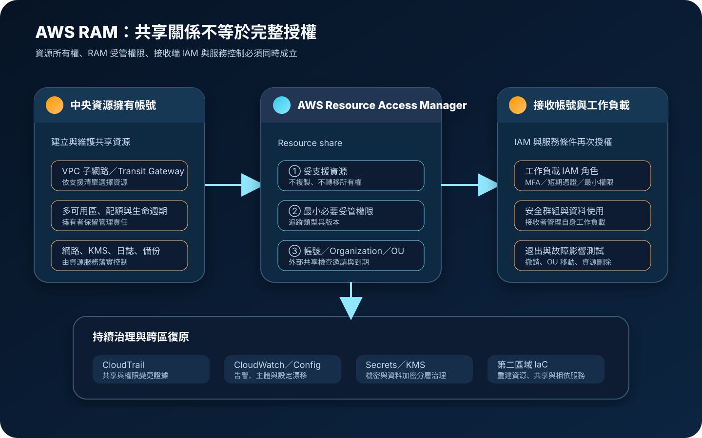

AWS Resource Access Manager：跨帳號資源共享與權限治理
AWS Resource Access Manager（AWS RAM）讓資源擁有者把受支援的 AWS 資源分享給其他帳號、AWS Organizations 內的組織單位或特定支援主體，減少重複建立資源。共享不會轉移資源所有權，也不會取代 IAM、資源政策、網路隔離、資料保護與持續稽核。
作者：Dr. William｜查閱與發布：2026-10-28
服務定位
AWS RAM 是跨帳號資源共享的控制面。資源擁有帳號建立 resource share，選擇受支援資源、AWS RAM 受管權限與可使用該資源的主體；受邀或組織內主體在接受並具備自身 IAM 權限後，依資源類型執行允許的操作。
RAM 適合集中提供網路、容量、授權或其他共享基礎設施，例如 VPC 子網路、Transit Gateway、Route 53 Resolver 規則或部分 License Manager 組態。它不會複製資源，也不會把資源移入接收帳號；資源仍由擁有帳號管理生命週期、可用性、配額、成本歸屬與底層安全設定。
核心概念與服務邊界
共享模型
- 資源擁有者：建立與管理原始資源、resource share、受管權限、主體清單及共享生命週期。
- Resource share：把一或多個受支援資源、權限及主體組合為可治理的共享單位。
- 資源：必須是 AWS RAM 支援的資源類型；不同類型的可分享範圍、操作與區域特性不同。
- 主體：可包含 AWS 帳號、Organizations 內的組織或組織單位，以及特定資源類型支援的 IAM 角色或使用者。
- 邀請：未透過啟用可信存取的 Organizations 自動共享時，外部帳號通常必須接受邀請。
- 所有權不變：共享不轉移擁有權；接收者也不能任意修改擁有者保留的管理操作。
權限與治理
- AWS RAM 受管權限：定義主體可對共享資源執行的動作；每個資源類型可有不同權限版本。
- IAM 交集：接收帳號中的身分仍須具備 IAM 允許；RAM 權限不會自動授予每位使用者操作權。
- Organizations 整合：可信存取可簡化組織內共享，但組織與 OU 變動會改變實際納管範圍。
- 區域性：多數共享與資源具有區域範圍；部分全球資源及跨區能力須依個別服務確認。
- CloudTrail：記錄 RAM API 與共享管理事件，供變更追蹤、告警與事件調查。
- 資源服務控制：實際網路、加密、日誌、備份與可用性仍由被共享資源的服務設定負責。
適合與不適合的使用情境
適合
- 多帳號環境需要共用中央網路資源，避免每個工作負載帳號重複建立及管理。
- 平台團隊要把標準化資源提供給特定帳號或組織單位，並保留所有權與生命週期控制。
- Organizations 內帳號持續增加，需要以 OU 為範圍自動提供共享資源。
- 企業需要明確記錄誰建立共享、分享哪些資源、採用哪一版權限，以及何時加入或移除主體。
- 跨帳號架構希望集中成本與設定，同時由接收帳號管理自己的工作負載及 IAM 身分。
不適合或不能單獨完成
- 資源類型不受 AWS RAM 支援，或所需操作超出該資源的受管權限。
- 需要複製資料、移轉資源所有權或建立跨區副本；RAM 只提供存取，不執行資料複寫。
- 把共享視為完整授權方案，卻沒有接收帳號 IAM、SCP、資源政策與 KMS 金鑰政策設計。
- 需要強隔離的法規或租戶邊界，不允許多個帳號共用同一底層資源。
- 共享資源的維護窗口、配額、故障與成本尚未建立清楚的服務責任及通知流程。
示意故事案例：集中網路團隊共享私有子網路
以下為示意案例，不代表特定企業或正式部署。 一家公司以 AWS Organizations 管理正式、測試與資料處理帳號。每個應用團隊自行建立 VPC，導致 IP 位址重疊、出口控制不一致、流量日誌缺漏，且跨帳號連線成本與路由維護持續增加。
中央網路帳號建立多可用區 VPC 與私有子網路，透過 AWS RAM 將指定子網路分享給正式與測試 OU。應用帳號只在獲准的共享子網路建立支援資源，網路帳號保留路由、網路 ACL、出口與整體位址規劃責任；各應用帳號負責自身安全群組、IAM 角色、執行環境與資料分類。
平台團隊使用最小權限管理 RAM，管理者採 MFA、聯合身分與短期憑證；resource share 變更進入同儕覆核。CloudTrail 與 CloudWatch 偵測主體、權限版本及共享資源變更，設定漂移由 AWS Config 或自動化盤點追蹤。應用 credential 放在 Secrets Manager 或 Parameter Store，資料與日誌依分類使用 KMS。第二區域另外建置可獨立運作的 VPC、子網路與共享定義，因為 RAM 本身不會跨區複寫網路資源。

建置與運作流程
- 盤點需求：確認要共享的資源類型、擁有帳號、接收主體、區域、資料分類、操作需求及退出條件。
- 確認支援：查閱 RAM 可共享資源清單，核對該類型支援的主體、受管權限、區域與限制。
- 設計帳號邊界：決定資源擁有帳號、平台管理角色、Organizations OU、外部帳號及職責分工。
- 評估可信存取：若啟用 Organizations 整合，先分析組織與 OU 變更對自動共享範圍的影響。
- 建立資源：依服務最佳實務設定多可用區、容量、配額、網路、加密、日誌、標籤與備份。
- 選擇權限：採用最小必要的 AWS RAM 受管權限並記錄版本，不以較寬權限取代需求分析。
- 建立共享：加入指定資源與主體；外部帳號邀請須由已驗證的帳號擁有者接受。
- 配置接收端 IAM：讓獲准工作負載角色取得必要操作，拒絕一般使用者與不相關自動化。
- 驗證服務控制：測試安全群組、路由、KMS、資源政策、SCP、配額及跨帳號相依關係。
- 保護機密：credential、Access Key、Secret Key、Token、密碼與 cookie 不得放入標籤、描述或 IaC；改用 Secrets Manager 或 Parameter Store。
- 集中稽核：收集 CloudTrail、CloudWatch、AWS Config 或資源盤點，對共享、權限與主體異動告警。
- 演練退出：測試撤銷分享、移出 OU、刪除資源、帳號停用、故障及跨區重建的影響與順序。
成本、可用性與維運考量
AWS RAM 本身目前不收取額外的資源共享費用，但被共享資源、資料處理、跨可用區或跨區傳輸、CloudTrail、CloudWatch、AWS Config、S3、KMS、備份與其他整合服務仍可能計費。費用責任依資源類型而異，估算時須確認擁有帳號與接收帳號各自產生的用量，不應只看 RAM 控制面。
共享不會提高原始資源的可用性。若中央資源、單一區域、單一路由或單一容量池失效，所有依賴帳號可能同時受影響。資源擁有者應依服務能力採多可用區、容量監控與配額管理；需要跨區復原時，必須在目標區域重建資源、RAM 分享、IAM、網路、KMS、日誌及相依服務並完成演練。
維運負擔集中在主體漂移、權限版本、外部邀請、OU 移動、共享資源刪除、配額競爭及責任不清。每個 resource share 應有擁有者、用途、資料分類、主體清單、權限版本、成本模型、可用性目標、變更流程與退場日期；共用資源應有服務等級與維護通知機制。
AWS RAM 特有資安風險與控制
- 分享給錯誤主體：建立前核對帳號 ID、組織與 OU；外部帳號使用雙人覆核及到期日。
- OU 移動擴大或中斷存取：把 Organizations 變更納入共享影響分析，持續輸出實際主體清單。
- 受管權限過寬：選擇最小必要權限，追蹤版本變更並在測試帳號驗證可執行動作。
- 誤把 RAM 當作 IAM：接收端角色仍採 IAM 最小權限、MFA、聯合身分及短期憑證；不建立不必要的長期 Access Key。
- 共享網路破壞隔離：明確分工 VPC、子網路、路由、網路 ACL、安全群組、DNS 與出口控制，禁止未核准公開路徑。
- 公開存取被間接建立：盤點共享資源連接的負載平衡器、公開 IP、Internet Gateway、CloudFront 或 API 入口。
- KMS 解密失敗或過度授權：RAM 分享不自動放寬 KMS；金鑰政策、Grant 與 IAM 必須共同限制並記錄。
- 共享資源遭單點濫用：設定服務配額、速率、容量警戒與公平使用規則，避免一個帳號耗盡共用能力。
- 擁有者刪除造成連鎖中斷：限制刪除權限，使用變更窗口、相依清單、保護機制與回復程序。
- 外部邀請無人管理：定期清查待接受、已接受、遭拒與到期邀請，移除不再合作的帳號。
- 稽核缺口：啟用組織級 CloudTrail，將 RAM 與資源服務事件集中保存，以 CloudWatch 告警高風險變更。
- 機密寫入中繼資料：標籤、名稱、描述及 IaC 不得包含 credential 或個資；應用機密由 Secrets Manager 或 Parameter Store 管理。
- 跨區誤解：確認每項資源及共享的區域範圍，不把可見的共享關係誤認為資料已複寫或可自動容錯。
- 備份責任空白：明定擁有者負責資源備份與復原、接收者負責工作負載資料與設定，並共同演練相依順序。
共同責任邊界
AWS 負責 AWS RAM 受管服務、控制面與底層基礎設施的安全及可用性。客戶負責選擇正確資源、主體與受管權限，管理 Organizations 整合、邀請、IAM、SCP、資源政策、KMS、網路、日誌、資料、成本、配額、備份及跨區復原。
資源擁有者負責共享資源的生命週期、服務設定、可用性與多數平台控制；接收者負責其身分、工作負載使用方式、輸入資料與帳號內控制。IAM 最小權限、MFA／短期憑證、網路隔離、公開存取治理、KMS 加密、Secrets Manager 或 Parameter Store、CloudTrail／CloudWatch、備份與跨區復原仍需分層落實，不能因已使用 RAM 而省略。
上線與維運可執行檢查清單
- □ 已確認資源類型、區域、主體與必要操作均受 AWS RAM 支援。
- □ 已記錄資源擁有者、接收者、平台團隊與資安團隊的責任。
- □ 帳號 ID、組織與 OU 均經雙人核對，外部共享具有核准與到期日。
- □ Organizations 可信存取的影響已評估，OU 移動會觸發共享範圍檢查。
- □ AWS RAM 受管權限採最小必要版本，升版前會在測試帳號驗證。
- □ 接收端 IAM 採最小權限、聯合身分、MFA 與短期憑證。
- □ 不必要的長期 Access Key 已停用，緊急權限有監控與定期測試。
- □ VPC、子網路、路由、安全群組、網路 ACL、DNS 與公開入口責任清楚。
- □ 共享資源與相關資料依分類使用 KMS，金鑰政策及 Grant 已驗證。
- □ 應用機密使用 Secrets Manager 或 Parameter Store，未放入標籤、描述或 IaC。
- □ 組織級 CloudTrail 已記錄 RAM API，CloudWatch 對共享及權限變更告警。
- □ AWS Config 或資源盤點會持續比對共享資源、主體、權限與標籤。
- □ 已測試接收帳號可執行的允許與拒絕操作，不只確認主控台可見。
- □ 已盤點服務配額、容量競爭、費用歸屬、資料傳輸與日誌成本。
- □ 原始資源已依需求採多可用區，且故障不會依賴單一路由或單一端點。
- □ 已測試撤銷分享、邀請到期、OU 移動、帳號停用與資源刪除。
- □ 第二區域有可重建的 IaC、資源、分享、IAM、KMS、日誌與相依服務。
- □ 備份與跨區復原演練涵蓋擁有帳號及所有接收帳號的啟動順序。
- □ 每個 resource share 具有擁有者、用途、主體清單、權限版本與定期複核日期。
- □ 正式內容不含 credential、Access Key、Secret Key、Token、密碼或 cookie。
AWS 官方一手來源
- What is AWS Resource Access Manager?（查閱：2026-10-28）
- Getting started sharing AWS resources（查閱：2026-10-28）
- Shareable AWS resources（查閱：2026-10-28）
- Creating a resource share in AWS RAM（查閱：2026-10-28）
- Security in AWS Resource Access Manager（查閱：2026-10-28）
- Security best practices for AWS RAM（查閱：2026-10-28）
- Logging AWS RAM API calls using AWS CloudTrail（查閱：2026-10-28）
- Quotas for AWS RAM（查閱：2026-10-28）
- Resilience in AWS Resource Access Manager（查閱：2026-10-28）
- AWS Resource Access Manager FAQs（查閱：2026-10-28）
- AWS Shared Responsibility Model（查閱：2026-10-28）
內容說明
本文依查閱日可用的 AWS 官方文件整理，作為基礎學習與架構討論材料；實際部署仍須依最新支援資源、區域、受管權限版本、Organizations 設定、服務配額、定價、資料分類、法規、網路架構與故障演練結果調整。